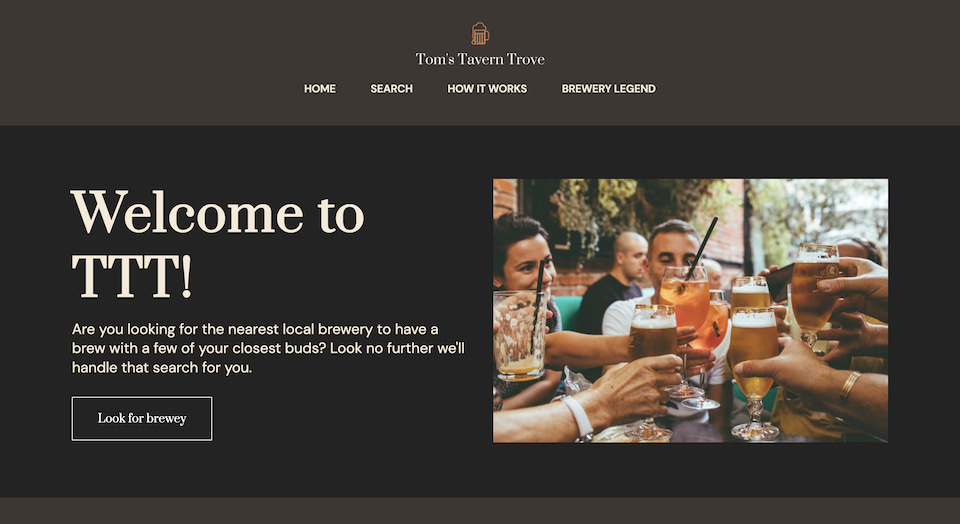
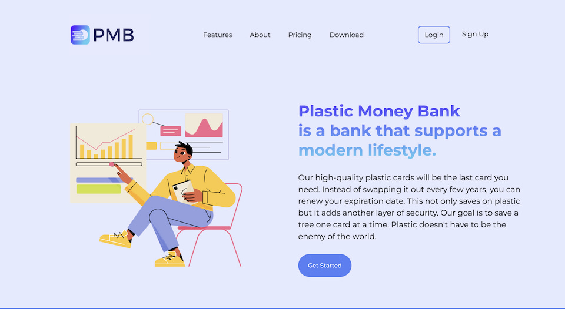
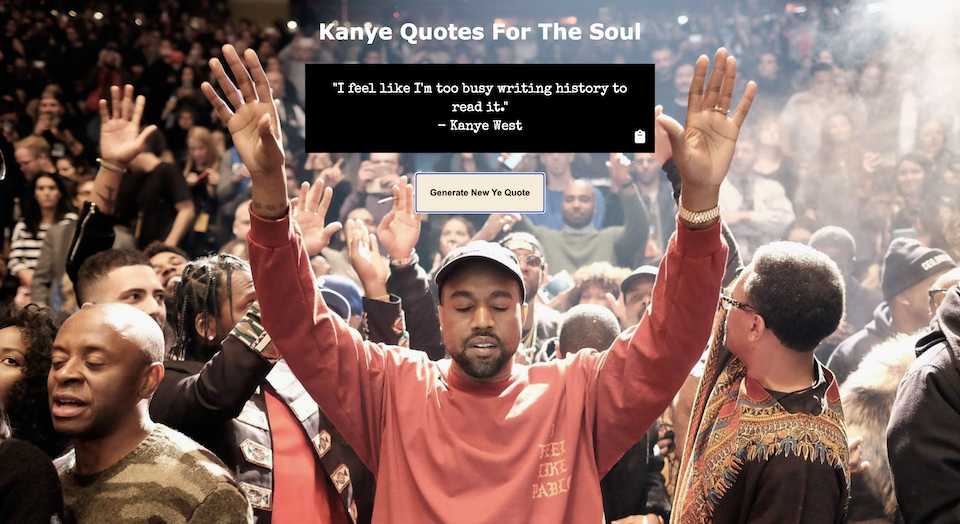

Tom's Tavern Trove
I used Vanilla Javascript, HTML, CSS, and a web-based API to build this app. This app gives users the ability to search for Breweries based on location or name. I had a lot of fun building this app because it allowed me to manipulate an extensive database and learn more about Breweries. One of the challenges I faced with this project was organizing the data in a clear and readable format.

Plastic Money Bank
I used Vanilla Javascript, HTML, and CSS to make this website. It's a banking LP with an original design. Plastic Money Bank is a bank that offers a competitive interest rate and a one-time durable card. The goal of this bank is to save the world one plastic card at a time. It's responsive and user-friendly.

Kayne West Quote Generator
I used Vanilla Javascript, HTML, CSS, and a web-based API to build this app. This app gives users the ability to generate a random Kayne Quote and copy it with a click. I built this app because I thought it would be an interesting way to find new Kanye quotes.

RecipeBookmark
I used the full MERN stack to create this app. I currently host the API on Heroku and Frontend on Netlify. RecipeBookmark uses a DB for user validation and JWT for authentication to keep track of users. RecipeBookmark takes advatage of this by assigning post to the correct users and creating a personal recipe section for each user. Having this functionality was especially important because now a user can preview there favorite recipes with a glance. Each recipe card provides more information than a traditional bookmark would. On top of that this app can do all CRUD operations. Allowing users to edit post they previously created.